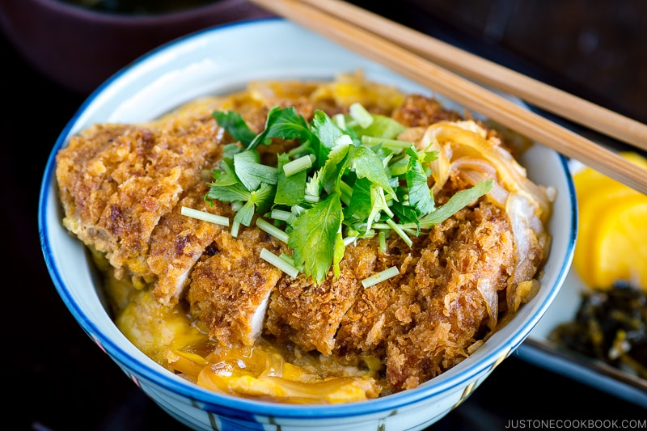

Katsudon

Description
A delicious bowl of fried pork/chicken tonkatsu over rice
topped with a savory onion, dashi, and egg sauce
The perfect comfort food for a cold or rainy day.
Tools
- Medium Sized Sauce Pan
- Spatula for Flipping/Sauteing
- Small Bowl
- Whisk
- 6-inch skillet
- 4 Bowls for Serving
Ingredients
- 12 oz Medium Spanish onion,
peeled, cut in half lengthwise, and sliced
- 1/2 cup dashi
- 1/2 cup sake
- 1/2 cup mirin
- 1/2 cup soy sauce
- 8 eggs
- 4 fillets cooked tonkatsu,
each fillet cut into 1/2 inch slices
- 6 cups cooked Japanese white rice
(Optional)
- 8 sprigs mitsuba parsley,
stems and leaves coursely chopped
Directions
- Add the onion, dashi, sake, mirin, and soy sauce to a saucepan
and bring it to a boil over medium heat. Cook for about 5 minutes,
until the onions soften.
- Break 2 eggs into a bowl and lightly beat the eggs, no more than
10 times. You want part of the yolk and whites to be lightly mixed,
while other parts are still separated. Set aside.
- To prepare the katusdon one serving at a time, pour one-fourth
of the sauce and onions into a small skillet. A 6-inch skillet works great.
Place a sliced tonkatsu fillet in the sauce. Place over high heat
and cook for about 30 seconds.
- Pour three-fourths of the egg mixture over the tonkatsu, onions, and sauce.
Do not mix. Cook for about 1 minute, then add the remaining one-fourth
egg over the ingredients in the skillet. Cover the skillet and cook for
30 seconds more. Turn off the heat, and let the katsudon rest, covered,
for 1 minute.
- While the katsudon is resting, scoop 1 1/2 cups of the cooked rice into
a serving bowl. When the katsudon is ready, uncover, and slide entire contents
out of the skillet to rest on the rice. Tilt the skillet and use a spatula
if necessary; the katsudon should slide out easily.
Garnish with mitsuba and serve immediately.
Repeat for the remaining servings.